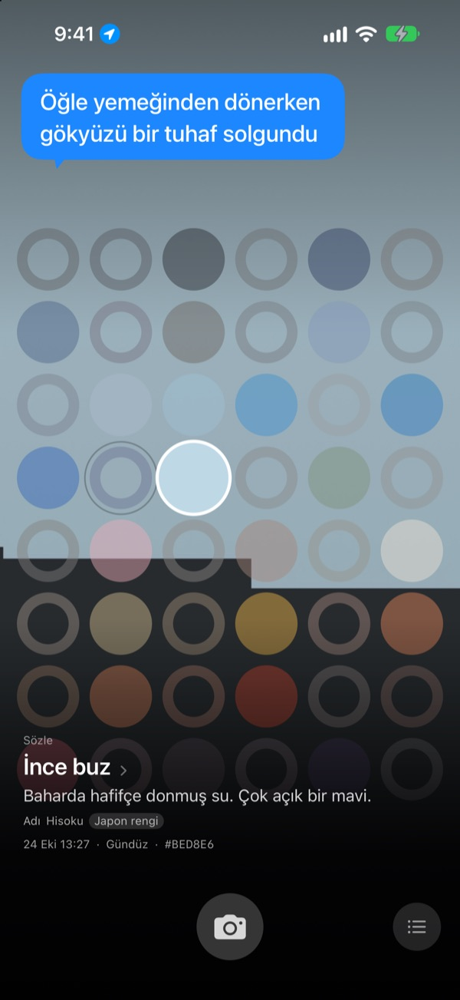
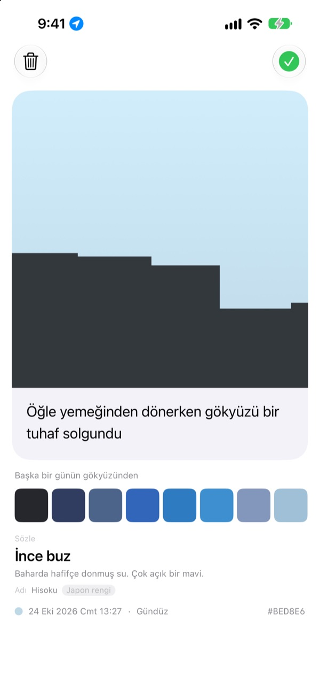
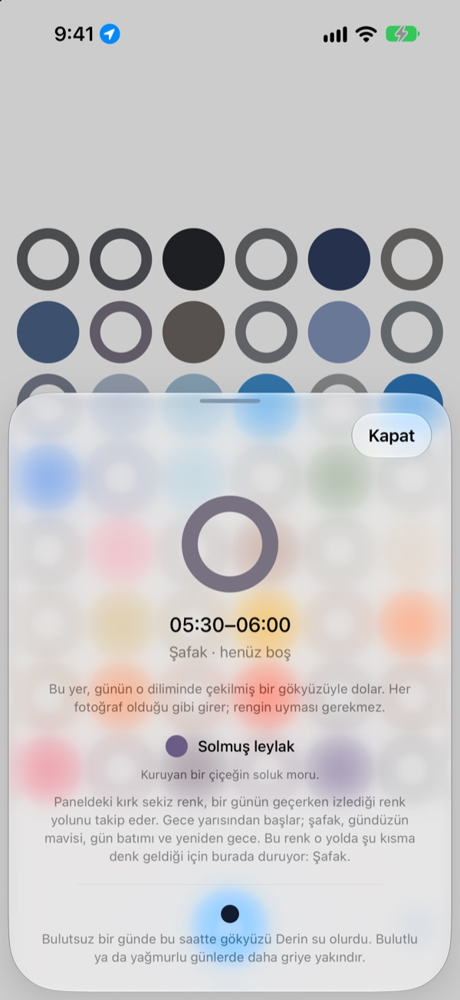
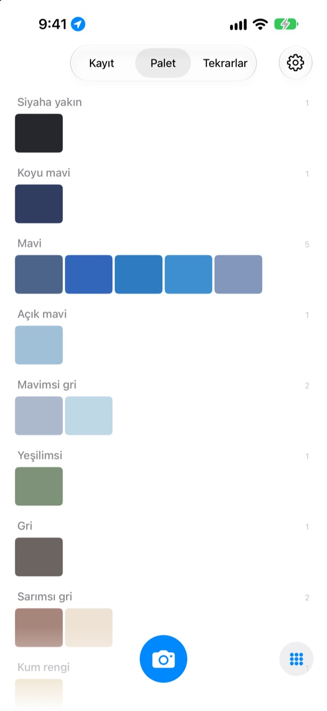

Bugün gökyüzü
ne renkti?
Gökyüzünü fotoğrafla, kırk sekiz karelik tahtada o saatin karesi yakaladığın renkle dolsun. Renk, gözünün önüne getirebileceğin bir ad da alır: ince buz, havuz fayansı, olgun hurma gibi.
Ücretsiz. Hesap yok, giriş yok.

Tahtayı dene
Bir kareye dokun, günün hangi saatine ait olduğunu gör. Bir gökyüzü fotoğrafı ekle, şu anın karesi dolsun. Sonra günleri ileri sar ve tahtanın nasıl değiştiğini izle.
Gökyüzüne her gün bakıyorsun ama tek bir rengini hatırlamıyorsun
İşe giderken baktığın gökyüzü, öğle yemeğinden çıkarken gördüğün gökyüzü: akşam olunca o renkler çoktan aklından çıkmış olur. Çektiğin gökyüzü fotoğrafları da galerideki her şeyin arasında kaybolur. SkyDex onları renk olarak toplar ve bugünün gökyüzünün geçtiği yolu tek bir tahtada gösterir.
Her gökyüzü bir ad alır
Her renk önce gözünün önüne gelen bir ad alır: ince buz, havuz fayansı, olgun hurma gibi. Altında kökeni belli bir ad gelir: Kore rengi, Japon rengi, pigment ya da web rengi.
Eşleşme yakınsa başında Adı, uzaksa dürüstçe En yakın adı yazar.

Bir satır bırak
Fotoğrafı çeker çekmez bir kart açılır. Yukarı bakarken aklından geçeni yaz, tahtada o kareye her dokunduğunda yazı yeniden gökyüzünün üstünde belirir.
Başka bir günün gökyüzü rengini bu fotoğrafın üstüne serip sonucu görsel olarak da paylaşabilirsin.

Boş kareler yol gösterir
Boş bir kareye dokun, günün hangi saatine ait olduğunu ve hangi rengi araman gerektiğini gör. Bulutsuz bir günde o saatte gökyüzünün nasıl göründüğünü de bulunduğun yerin gün doğumu ve gün batımı saatine göre söyler.
Rengin tutması gerekmez. Kapalı bir günün grisi de o günün gökyüzü rengidir.

Kayıt, palet, tekrarlar
Gökyüzü fotoğraflarına sırayla göz at, renklerini mavi, gri ve kum rengi gibi paletlerde topla. Aynı saati başka bir gün yeniden çek, ikisi yan yana dursun.
Ana Ekran widget’ları bugünün tahtasını ve bugünün gökyüzünü bir bakışta gösterir.

Başlamak için üç adım
- 1
Yukarı bak
Tahtanın altındaki kamera düğmesine dokun, gökyüzü kare çerçeveyi doldursun.
- 2
Bir kare dolar
Şu anın karesi yakaladığın rengi ve bir ad alır.
- 3
Bir satır bırak
Açılan karta aklından geçeni yaz.
Tahta günü böyle böler
- Gece yarısı · 00.00–05.00
- altı kare
- Şafak · 05.00–08.00
- altı kare
- Gündüz · 08.00–16.00
- on iki kare
- İkindi · 16.00–18.00
- altı kare
- Gün batımı · 18.00–21.00
- on iki kare, her 15 dakikada bir
- Gece · 21.00–24.00
- altı kare
Gökyüzünün hızla değiştiği gün batımı çevresinde kareler sık, neredeyse hiç kıpırdamadığı gece yarısında ise geniştir. En üstte gece yarısı vardır ve gün aşağı doğru akar.
Sorular
Bir kare nasıl dolar?
Bugün çektiğin gökyüzü, renk beklediğin gibi çıkmasa bile çektiğin saatin karesini doldurur. Çünkü o saatte gökyüzü gerçekten öyleydi. Önceki günlerin gökyüzü fotoğrafları renge göre yerleşir: bir karenin rengine yeterince yakınsa o kareyi doldurur ve her fotoğraf yalnızca bir kare doldurur.
Dün dolu olan bir kare bugün boş.
Tahta her zaman bugündür. Dünkü gökyüzünün saatine göre doldurduğu kare, gün dönünce yalnızca renge göre yeniden eşleştirilir. Bu yüzden tahta bazı günler neredeyse doludur, bazı günler boş görünür. Fotoğrafların bir yere gitmedi: hepsi Kayıt’ta, renk sırasıyla da Palet’te duruyor.
Doldurduğum kareler soluyor.
Bu bilerek böyle. Bir fotoğraf bir hafta boyunca gerçek rengini korur, ardından sonraki sekiz hafta içinde yavaş yavaş solar. Silinmez ve hiçbir zaman tamamen kaybolmaz. O saatte gökyüzünü yeniden çekersen kare hemen tam rengine döner. Bozulacak bir seri ya da geri kazanılacak bir puan yok.
Rengin tutması gerekiyor mu?
Hayır. Geçti ya da kaldı diye bir şey yok. Her fotoğraf kaydedilir ve kapalı bir günün grisi de o günün gökyüzü rengidir.
Konumumu neden istiyor?
Yalnızca boş bir kareye dokunduğunda, bulutsuz bir gökyüzünün o saatte nasıl göründüğünü bulunduğun yerin gün doğumu ve gün batımı saatine göre söyleyebilmek için. Kilometre düzeyinde yaklaşık konum kullanılır ve koordinatlar fotoğraflarına asla eklenmez. İzin vermezsen her şey yine çalışır, o zaman Seul esas alınır.
Galerimdeki bir gökyüzünü ekleyebilir miyim?
Evet. Kamera yerine Fotoğraflar’dan seçtiğin gökyüzü de kare biçiminde kırpılır ve tıpkı yeni çektiğin bir fotoğraf gibi şu anın karesini doldurur.
Bir fotoğrafı nasıl silerim?
Fotoğrafı aç ve Sil’e dokun ya da Kayıt’ta üzerinde sola kaydır. Hem cihazından hem iCloud’undan birlikte silinir. Uygulamayı silsen de iCloud’daki kopya kalır, yeniden yüklediğinde topladığın gökyüzü fotoğrafları geri gelir.
Telefon değiştirince ne olur?
Topladığın gökyüzü fotoğrafları kendi iCloud’unda saklanır, bu yüzden aynı Apple Hesabı ile giriş yapılmış yeni cihazda kaldığın yerden devam eder. Ayrı bir hesap ya da sunucu yok, fotoğrafların ve renklerin geliştiriciye asla gönderilmez. Reklam yok, takip yok.
Gerçekten ücretsiz mi?
Evet, tüm özellikler ücretsiz. Beğenirsen uygulama içinden geliştiriciye bahşiş bırakabilirsin ama bahşiş hiçbir şeyin kilidini açmaz.
Hangi cihazlarda çalışır?
iOS 17.0 veya üzeri bir iPhone’da, yalnızca dikey yönde.
Hatalar, tuhaf davranışlar ya da söylemek istediğin her şey için leeo@kakao.com adresine yaz. O sırada ne yaptığını ve hangi iOS sürümünü kullandığını eklersen sorunu bulmak çok daha kolay olur.